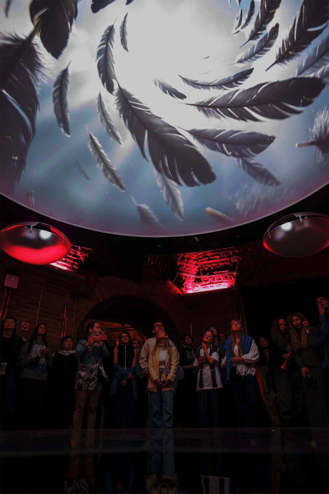
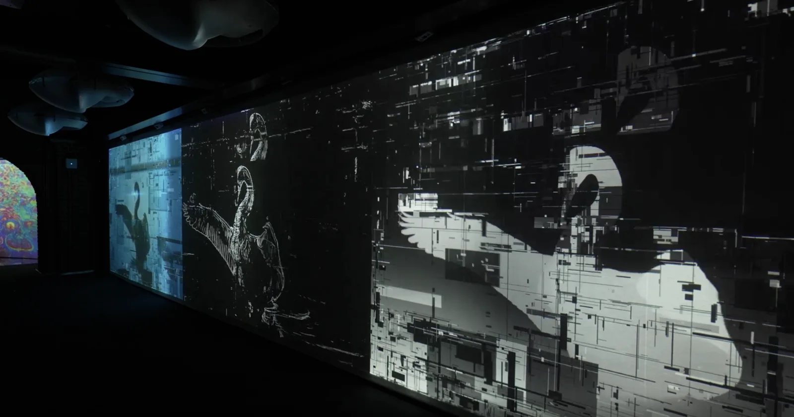

Поток несовершенства
Санкт-Петербург · Галерея «Цифергауз», Новая Голландия · 18 сентября — 19 октября 2025
Автор работы «Естественная ошибка появления Чёрного лебедя». Монтаж всей видеопрограммы выставки и тестирование на площадке. Участвовал в составе арт-группы «Берёзовый промпт».
Выставка «Поток несовершенства» посвящена ошибкам искусственного интеллекта: глитчам, искажённым формам и неожиданным результатам генерации. Проект «Берёзового промпта» показан в «Цифергаузе» совместно с фестивалем D/G/TAL RA/N.
Моя работа «Естественная ошибка появления Чёрного лебедя» — о событии, которое кажется внезапным, хотя за ним стоит длинная цепь причин. Стремясь к порядку, мы сами создаём условия для хаоса, и ошибка оказывается закономерным продолжением наших действий.
Моя роль в выставке
Я полностью смонтировал видеопрограмму из работ всех участников арт-группы. До открытия регулярно приходил в «Цифергауз», чтобы тестировать её на площадке и готовить к показу.
Фотографии и изображения


